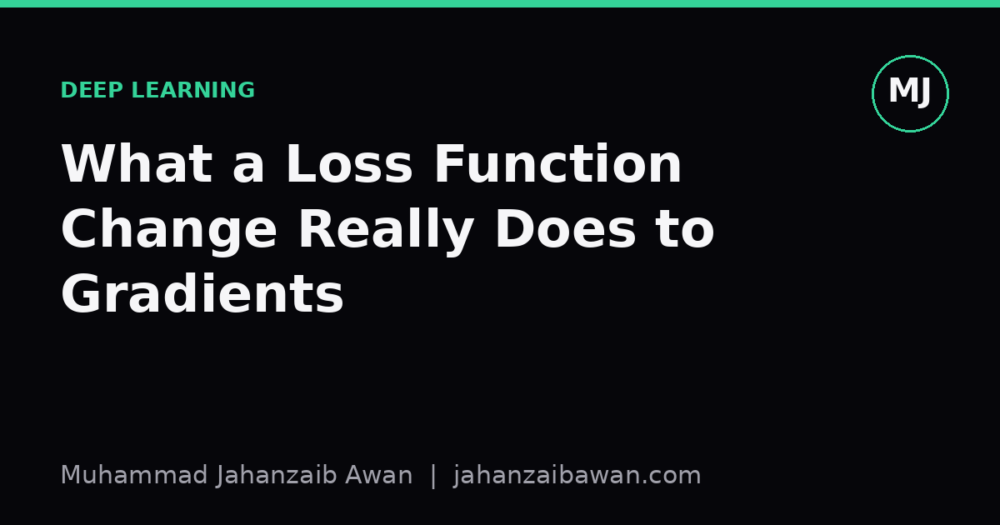

What a Loss Function Change Really Does to Gradients
Swapping one loss for another is never just a cosmetic choice. Here is a worked example showing exactly how it reshapes the gradient a model actually learns from.

Why this matters more than it looks
In most tutorials, the loss function is treated as a single line near the top of the code, chosen and forgotten. In practice, it is the thing that decides what 'better' means to your optimiser, and every gradient step your model ever takes is a direct consequence of that choice. Two models with identical architectures, identical data, and identical learning rates can converge to visibly different solutions purely because one was trained with squared error and the other with absolute error.
The reason this is easy to overlook is that most of us reason about loss functions as curves on a graph, not as gradient generators. A loss function is really a recipe for turning a prediction error into a learning signal. Two recipes that look similar on paper, both penalising wrong predictions, can produce wildly different signals depending on how large or small the error happens to be. I want to make that concrete with one toy example rather than wave my hands at it.
So here is the plan. I will take a single data point, a single prediction, and run it through three common losses: mean squared error, mean absolute error, and a hinge-style loss. I will compute the actual gradient with respect to the prediction in each case, and show what each one tells the model to do next. No architecture, no dataset, just the arithmetic that sits underneath every training run.
Setting up the toy example
Suppose the true target value is y = 10, and our model currently predicts y_hat = 7. The error is 3. We want to know: for each loss function, what gradient does the model receive with respect to its own prediction, and what does that gradient imply about the next update?
For mean squared error, the loss for a single point is L = (y - y_hat)^2, and the derivative with respect to y_hat is -2(y - y_hat). Plugging in our numbers gives -2(3) = -6. The magnitude of this gradient is proportional to the size of the error itself. A small error gives a small nudge; a large error gives a large, even more forceful nudge, because the squaring amplifies big mistakes disproportionately.
For mean absolute error, the loss is L = |y - y_hat|, and the derivative with respect to y_hat is -sign(y - y_hat), which is just -1 here, regardless of whether the error was 3 or 300. The gradient has constant magnitude; only its direction changes. This is the key structural difference: squared error gradients scale with error size, absolute error gradients do not.
For a hinge-style loss, commonly used in margin-based classification, imagine a simplified regression analogue where the loss is max(0, m - (y - y_hat)) for some margin m, say m = 1. If the current gap (y - y_hat) is already larger than the margin, the loss is zero and the gradient is exactly zero: no update happens at all. If the gap is smaller than the margin, the gradient is constant, similar in spirit to absolute error, but the loss only activates near the decision boundary rather than everywhere.

What these three numbers actually mean for training
Look at what just happened. With an error of 3, squared error tells the optimiser 'move by 6 units of signal', absolute error tells it 'move by 1 unit of signal, in this direction', and hinge tells it either 'move by 1 unit' or 'do nothing', depending on where the margin sits. Same data point, same model, three entirely different instructions.
Now push the error up to 30, as would happen with a single bad outlier or a noisy label. Squared error's gradient becomes -2(30) = -60, ten times larger than before. The model will take a correspondingly huge step to chase that one point, potentially at the expense of everything it learned from well-behaved examples. Absolute error, by contrast, still outputs a gradient of magnitude 1. The optimiser treats a wildly wrong prediction with the same urgency as a mildly wrong one. This is precisely why squared error losses are notorious for being sensitive to outliers, and why absolute error is the standard recommendation when your data contains noisy or mislabelled points: the gradient simply refuses to be dominated by a handful of extreme errors.
This also explains a pattern that trips people up in practice: a model trained with squared error can appear to 'ignore' the bulk of well-fit data points late in training. Once most errors shrink to something small, say 0.2, the squared error gradient shrinks to -2(0.2) = -0.4, a tiny signal, while a handful of remaining large-error points keep generating gradients an order of magnitude bigger. The optimiser ends up spending its remaining capacity almost entirely on the stragglers. Switching to absolute error flattens that imbalance, because every point, regardless of how badly it is currently predicted, contributes the same unit of pull.
The hinge case illustrates a third, distinct behaviour: sparsity of updates. Once a prediction clears the margin, it stops contributing gradient at all. This is deliberate and useful in classification settings, where you often do not want to keep pushing on examples the model already classifies confidently, since doing so can distort the decision boundary and waste capacity on points that were never ambiguous in the first place.
The practical takeaway
None of this is really about memorising three formulas. The habit I would encourage is this: before choosing or changing a loss function, write out its derivative with respect to the prediction and plug in a small error and a large error by hand. That five-minute exercise tells you, honestly and without hand-waving, whether the loss will amplify outliers, treat all errors equally, or switch off entirely past some threshold.
This matters well beyond toy examples. If your real-world labels are noisy, a squared error loss will quietly let a small number of mislabelled points dominate your gradients, and no amount of architecture tuning will fix that; the fix lives in the loss function itself, or in explicit outlier handling. If your task has a natural margin or confidence threshold, a hinge-style loss can stop wasted updates on already-easy examples, freeing up gradient signal for the genuinely hard cases.
The one-line version I keep coming back to is this: a loss function is not a scoring rule you report at the end, it is a gradient generator you live with at every single step. Choose it with that in mind, and always sanity-check it on a single point before trusting it on a million.